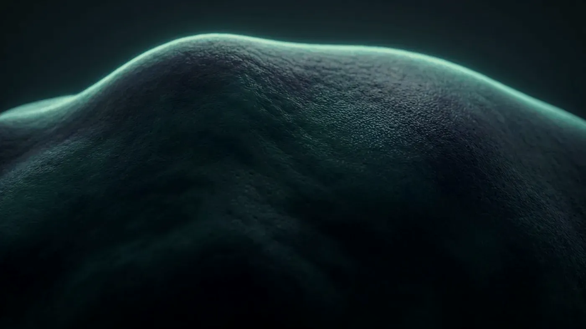

Mevzuat · İçerik sınırları
Uyduğumuz mevzuat
Sitedeki her sayfa, Türkiye’de sağlık hizmeti sunanların tanıtım ve bilgilendirme faaliyetlerine getirilen kurallar gözetilerek yazıldı. Bu sayfada hangi düzenlemeleri esas aldığımızı ve bunun içeriğe nasıl yansıdığını anlatıyoruz. Sitede bulamadığınız bazı bilgiler bir unutkanlık değil, bu kuralların sonucudur.

Temsilî görsel · yapay zekâ ile üretildiDayanak
Site hazırlanırken esas alınan düzenlemeler
Sayfaların içeriği, dili ve görsel tercihleri aşağıdaki dört düzenlemeye göre belirlendi. Her düzenleme için madde numarası vermek yerine, kolayca bulabilmeniz için adını ve Resmî Gazete’de yayımlandığı tarih ile sayıyı yazdık.
Sağlık Hizmetlerinde Tanıtım ve Bilgilendirme Faaliyetleri Hakkında Yönetmelik
Temel düzenleme budur: sağlık kuruluşları ile sağlık meslek mensupları, internet sitesi dâhil hangi mecrada olursa olsun, tanıtım ve bilgilendirme içeriklerini bu yönetmeliğin sınırları içinde hazırlar. Önceki tanıtım yönetmeliğinin yerini almıştır. Bu sitedeki ifade tercihlerinin çoğu doğrudan bu metne dayanır.
Ayakta Teşhis ve Tedavi Yapılan Özel Sağlık Kuruluşları Hakkında Yönetmelik
Ayakta hizmet veren özel sağlık kuruluşlarının (muayenehaneler de bunlara dâhildir) nasıl açılacağını, nasıl işleyeceğini, hangi fiziki ve personel koşullarını taşıyacağını ve hangi işlemleri yapabileceğini belirler. Muayenehanede yapılan uygulamaların sınırı bu çerçevenin içinde kalır.
Ticari Reklam ve Haksız Ticari Uygulamalar Yönetmeliği
Tüketiciye yönelik her reklamın doğru, dürüst ve yanıltmayan bir dille hazırlanmasını zorunlu tutar. Sağlıkla ilgili metinler, Bakanlık düzenlemelerinin yanında tüketiciyi koruyan bu kurallara da tabidir. Gizli reklam, abartılı vaat ve kanıtlanamayan üstünlük iddiası bu yönetmelik kapsamında ele alınır.
Kişisel Verilerin Korunması Kanunu
Bir bilginin hangi şartlarla işlenebileceğinin çerçevesini çizer. Sağlık bilgisi özel nitelikli veri sayılır ve daha sıkı korunur. İletişim formunun yalnız gerekli en az bilgiyi istemesi, şikâyet ayrıntısı sormaması bu kanunun sonucudur.
Bu kurallar sitenin içeriğini nasıl şekillendiriyor?
Sağlık alanındaki tanıtım, başka sektörlerden farklı bir anlayışla düzenlenir. Çıkış noktası şudur: hizmeti alacak kişi, neye ihtiyacı olduğunu çoğu zaman muayeneden önce bilemez.
Bir restoranı menüsüne ve yorumlarına bakarak seçebilirsiniz; ancak cildinize hangi uygulamanın uygun olduğunu ya da o uygulamanın sizde nasıl bir sonuç vereceğini muayene olmadan kestirmeniz mümkün değildir. Mevzuat bu bilgi farkını gözeterek talep yaratmaya dönük içeriklere sınır koyar.
Ücret bilgisi neden yayımlanmıyor?
Bir sağlık hizmetinin ücreti, öykünüze, muayene bulgularına ve üzerinde anlaşılan plana göre şekillenir. İnternette bir liste yayımlamak bu sırayı tersine çevirir: kişi neye ihtiyacı olduğundan önce, hangi işlemin ne tuttuğunu düşünmeye başlar.
Yönetmelik de sağlık hizmetlerinde ücret, indirim, taksit ya da süreli teklif üzerinden yapılan tanıtıma izin vermez. Ücreti bu nedenle ancak muayenede, planınız netleştiğinde öğrenirsiniz.
Başka hastaların deneyimlerini neden paylaşmıyoruz?
Hasta değerlendirmelerinin tanıtım amacıyla yayımlanması mevzuata aykırıdır. Ayrıca güvenilir bir ölçü de değildir: yayımlanan yorumlar seçilerek yayımlanır ve yayımlanmayanları kimse göremez.
Başka birinin memnun kalması, sizin şikâyetinizin nedeni ya da cildinizin yapısı hakkında bir şey söylemez. Biz bunun yerine hekimin kim olduğunu, eğitimini, hangi yetkiyle uygulama yaptığını ve değerlendirmeyi nasıl kurduğunu açıkça yazmayı seçtik.
Öncesi–sonrası görseli neden yayımlanmıyor?
Uygulamanın öncesini ve sonrasını yan yana gösteren görsellerin tanıtımda kullanılması kabul edilmez. Işık, açı, duruş, makyaj ve fotoğraf düzenlemesiyle kolayca değişebilen bu görseller gerçekçi bir beklenti kurmaz.
Üstelik sizde neyin değişeceğini göstermezler; girişimsel her uygulamada sonuç kişiden kişiye farklılık gösterebilir. Sitedeki görseller yalnızca ortamı tanıtmak ve konuyu anlatmak içindir; yapay zekâ ile üretilenler ayrıca işaretlenir.
Cihaz ve ürün adlarını nasıl kullanıyoruz?
Uygulama sayfalarında yöntemin genel adı kullanılır; örneğin “pikosaniye lazer” ya da “hyalüronik asit dolgu” denir. Muayenehanedeki cihazların model adları yalnızca klinik sayfasındaki cihaz listesinde ve ilgili uygulama sayfasındaki tek bir bilgi satırında, tanıtım unsuru olarak değil envanter bilgisi olarak geçer.
Enjeksiyonda kullanılan ürünlerin markaları sitede yer almaz. Size hangi ürünün, hangi gerekçeyle seçileceği muayenede konuşulur ve onam belgesine yazılır.
Abartılı ifadelerden neden kaçınıyoruz?
Üstünlük iddiası, sonuç vaadi, risk yokmuş izlenimi veren sözler ve doğrulanamayan başarı sayıları hem sağlık hem reklam mevzuatı bakımından sakıncalıdır. Metinlerdeki “hedeflenir”, “amaçlanır”, “değerlendirilir”, “hekim tarafından planlanır” gibi temkinli kalıpların nedeni budur. Her uygulama sayfasında olası istenmeyen etkiler, uygulamanın ertelendiği durumlar ve diğer seçenekler de aynı yerde anlatılır.
Başka sitelere neden bağlantı verilmiyor?
Başka bir siteye verilen bağlantı, içeriğinden sorumlu olmadığımız bir sayfayı öneriyormuşuz izlenimi yaratabilir. Bu nedenle bilgilendirme sayfalarında dış bağlantı yer almaz. Site dışına açılan adresler yalnızca bize ulaşmanızı kolaylaştıran kanallardır: WhatsApp hattı ve haritadaki yol tarifi gibi. Kaynaklarla ilgili sorularınızı muayenede sorabilirsiniz.
Sayfaların sonundaki hekim adı ve tarih ne işe yarar?
Tıbbi bilgi içeren her sayfanın sonunda içeriği hazırlayan hekimin adı ve uzmanlığı, metnin en son gözden geçirildiği tarih ve editöre yazabileceğiniz e-posta adresi bulunur. Bu sayede bir metnin güncel olup olmadığını ve hangi hekimin sorumluluğunda hazırlandığını kendiniz kontrol edebilirsiniz. Sayfanın alt kısmında muayenehaneye ait künye bilgileri de yer alır.
Denetim iki ayrı kurumda yapılabilir
Sağlıkla ilgili tanıtım içerikleri bir yandan il sağlık müdürlükleri ile Sağlık Bakanlığının, öte yandan Reklam Kurulu’nun incelemesine konu olabilir. Aynı metin iki farklı çerçeveden ayrı ayrı değerlendirilebilir. Sitedeki içerik bu nedenle tek bir düzenlemeye göre değil, yukarıdaki başlıkların tümü birlikte gözetilerek yazılmıştır.
Sitede mevzuata ya da tıbbi doğruluğa uymadığını düşündüğünüz bir ifade görürseniz info@rahmicebeci.com.tr adresinden site editörüne yazabilirsiniz. Her bildirim incelenir; gerekirse ilgili sayfa düzeltilir.
İlgili başlıklar
Konuyla bağlantılı metinler
İçerik ve görsel yayın ilkelerimiz
Yazı ve görsel seçiminde uyguladığımız ölçütlerin tam listesi.
Metne gitKVKK aydınlatma metni
Verilerinizin neden işlendiği, ne kadar tutulduğu ve bu konudaki başvuru yollarınız.
Metne gitHasta hakları
Bilgilendirilme, rıza, gizlilik ve şikâyet yollarınızın bu muayenehanede nasıl işlediği.
Metne gitNeden bazı işlemleri yapmıyoruz
Muayenehanenin kapsamının nerede bittiği ve başka bir dala başvurmanızın önerildiği durumlar.
Sayfaya gitSıkça sorulan sorular
Kapsam, uygulama süreci ve randevuyla ilgili en çok sorulanlara kısa yanıtlar.
Sorulara gitBir adım ötesi
Aklınızda bir soru kaldıysa
Sitede yanıtı olmayan konuları muayene sırasında hekime danışabilirsiniz. Randevu için iletişim sayfasındaki kanalları kullanabilirsiniz.